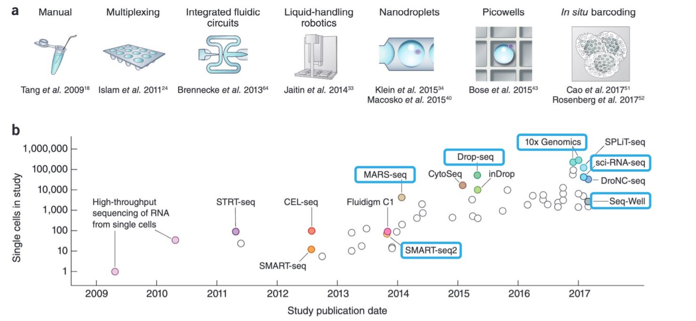

Chapter 2 Single-Cell RNA-seq Technologies

FIGURE 2.1: Explosion of scRNA-seq Throughput (2018)
Technological advances increase the efficiency of single-cell sequencing methods while the cost decreases day by day. In this chapter, we will briefly go through some of the single-cell RNA-seq technologies.
2.1 SMART-seq
2.2 MARS-seq
2.3 Droplet Microfluidics (DROP-seq)
2.4 10X Genomics Chromium
2.5 Nanowell Platforms
2.6 Sample Indexing (Illumina)
2.7 Single-cell Combinatorial Indexing: sciRNA-seq
References
Svensson, Valentine, Roser Vento-Tormo, and Sarah A. Teichmann. 2018. “Exponential scaling of single-cell RNA-seq in the past decade.” Nature Publishing Group. https://doi.org/10.1038/nprot.2017.149.